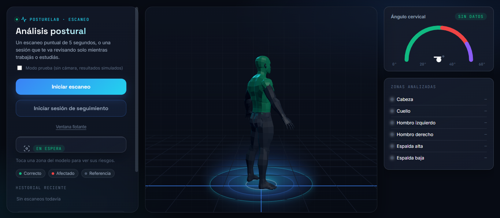
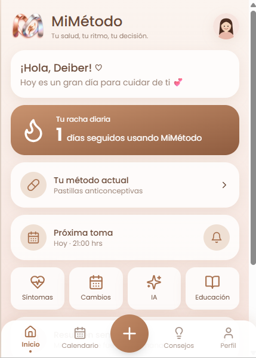
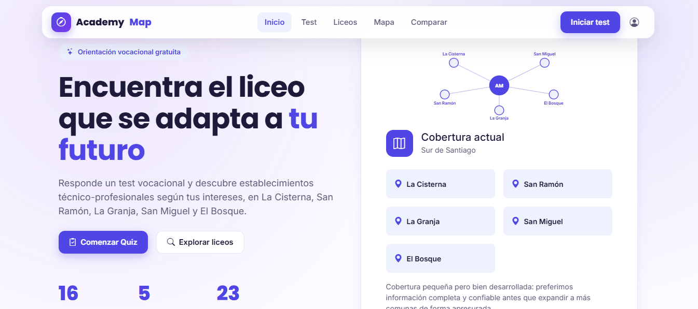

Frontend
Construcción de interfaces rápidas, accesibles y con personalidad.
Estudiante de programación · Santiago, Chile
Soy estudiante de Programación con formación Full Stack en Python. Me interesa desarrollar aplicaciones web útiles, desde la idea inicial hasta una versión funcional que otras personas puedan probar.
const developer = {
name: 'Deiber Camilo',
focus: [
'producto',
'experiencias'
],
status: true
};
// haz que cuente
launch(developer);01 / sobre mí
Me gusta desarrollar proyectos que tengan un propósito claro: ayudar a alguien, ordenar información o hacer más simple una tarea. Disfruto pasar de una idea a una primera versión funcional, probarla y mejorarla a partir de lo que voy aprendiendo.
Mi formación se centra en desarrollo web Full Stack, utilizando Python, Flask, HTML, CSS, JavaScript y MySQL. En mis proyectos he trabajado tanto la interfaz como la lógica y el manejo de datos, procurando que la solución sea útil y fácil de entender.
Hablemos ↗Interfaces que explican lo complejo sin hacerlo pesado.
Preguntas mejores antes de escribir soluciones.
Decisiones técnicas conectadas con objetivos reales.
02 / herramientas
Tecnologías que he utilizado en proyectos y actividades de formación.
Construcción de interfaces rápidas, accesibles y con personalidad.
APIs, lógica y datos que sostienen el producto.
Organización y gestión de datos con MySQL y SQL.
Control de versiones y herramientas para desarrollar proyectos con GitHub.
03 / mis proyectos
Estos son algunos de los proyectos en los que he trabajado mientras sigo aprendiendo y poniendo en práctica mis conocimientos. Las imágenes son mockups de presentación; cada enlace abre la versión publicada.

VISTA DEL PROYECTOProyecto enfocado en la conciencia postural durante el uso del computador. Combina una experiencia web con una propuesta visual para ayudar a reconocer hábitos que conviene mejorar.
Ver en línea ↗
VISTA DEL PROYECTOSitio informativo pensado para encontrar y comprender mejor contenidos sobre métodos anticonceptivos, con una estructura clara y navegación sencilla.
Ver en línea ↗
VISTA DEL PROYECTOPlataforma de orientación vocacional para estudiantes de 8° básico. Permite explorar liceos técnico-profesionales y comparar especialidades para tomar una decisión con más información.
Ver en línea ↗04 / cómo trabajo
Primero intento entender qué se necesita y a quién le puede servir.
Busco opciones, pruebo ideas y veo cuál tiene más sentido.
Empiezo a construir y voy revisando lo que funciona y lo que no.
Corrijo los errores y sigo mejorando con lo que voy aprendiendo.